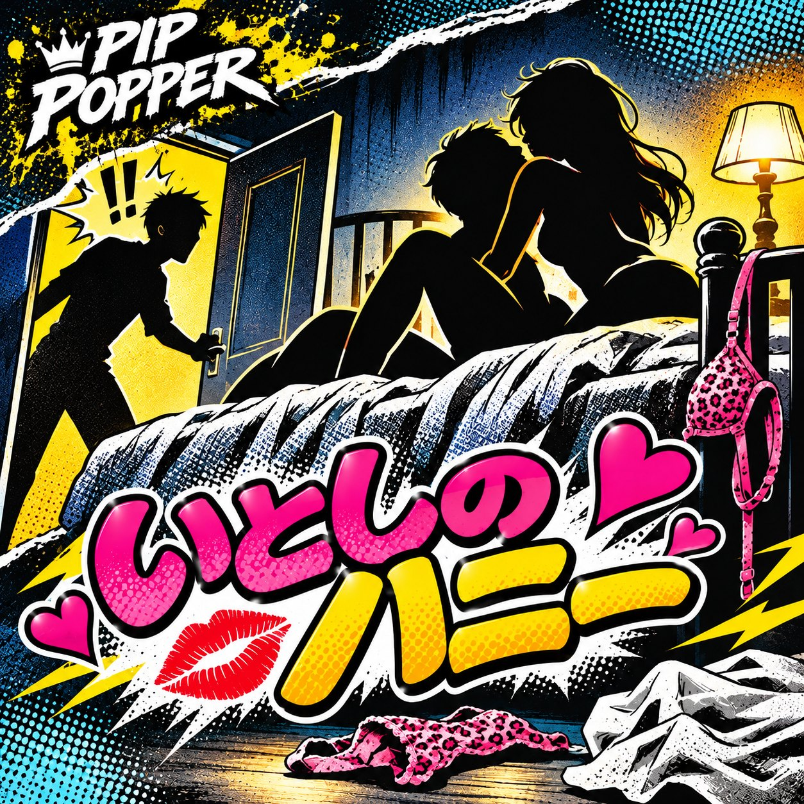

いとしのハニー

10
いとしのハニー
PIP POPPER
音源一般非公開
聴ける可能性がある人の条件心が広い人。
AI ImpressionAIの感想
「ちわ～っす!」の挨拶から始まり、複数の男性ボーカルが掛け合いで進めるコミカルなヒップホップ。同棲中の恋人と親友の浮気を目撃するという最悪の場面を、畳みかける韻とツッコミの応酬で笑い話へ変えていく。仕返しの話はいつの間にか「ブスでもいいじゃない」という独特の恋愛観の主張へ転がり、「じゃない」を重ねるフレーズが耳に残る。間奏には布団のたとえ話をめぐる会話劇が挟まり、仲間同士の日常会話から生まれた発想らしい遊び心がそのまま曲になっている。きわどい言葉も多いが、聴きどころは発想の飛躍と、掛け合いの間合いの良さだ。
Lyrics
ちわ～っす! もしかして君たちデブ専ブス専そこのイカくせェ学生！よく聴いときなSay Ho！Ho！Ho！Ho！
愛しの愛しの愛しのハニーみんなに自慢してた俺のハニーMy Honeyを寝取った犯人俺の友達との浮気は堪忍たまたま仕事が終わった五時半に急いで同棲中のハニーに会いに帰ると彼女が男連れ込んで合体中 の真っ最中
俺が見ている事にも気づかず動きが止まらんぞ！男のケツ ハニーが握るベットのシーツ床に散らばった二人のパンツ
「あいつには秘密」とか言ってる奴そいつは親友だった奴何やってんだ！このくそ女！ そいつといつから出来てんだ！
どうせブスじゃないそこがいいんじゃないその程度ならいっぱいいるじゃない胸でかいじゃないただのデブじゃないそんなことないじゃないじゃないやっぱ金じゃないやっぱ愛じゃない愛なんかなくてもいいじゃないいいこと言うじゃないだってそうじゃないやりたきゃソープでいいじゃない
やられっぱなしじゃ気がすまん取り締まるぜ気分はポリスマンこのまま黙ってられんぜ俺の浮気は絶対ばれんぜ！目には目を歯には歯をじゃ甘っちょろいお前の女落とすのはチョーちょろいチョーエロい ガードはチョーもろいもちろん乳首はチョー黒い
腹黒い悪魔を目覚まし仕返し◯◯◯◯◯◯◯◯◯◯◯◯あまりのデブさに電気消そうとしたけど◯◯◯勃たず消灯
そりゃそうと おまえ相当そういえばブス専だったね相当そんなことないぞ めちゃかわいいぞお前の趣味はおかしいぞ
彼女デブじゃないそんなことないじゃないそんなことないじゃないじゃない
彼女ブスじゃないブスでもいいじゃないまくらで隠せばいいじゃない
彼女デブじゃないそんなことないじゃないそんなことないじゃないじゃない
彼女ブスじゃないブスでもいいじゃないバックで責めればいいじゃない
「あー、あの女抱きてぇ～な 」 「マジか？」 「あいつめっちゃ足ふてぇやん?それデブ専じゃね？」 「じゃあさ、お前は固い布団と柔らかい布団があったら、どっちで寝たい？」 「そりゃ柔らかい布団や！」 「でしょ？ならさ、柔らかい布団で試してから意見きこか！」
モー娘の×××◯◯◯◯の◯◯◯の◯◯◯を（Oh！）選ぶ人へ なかなかいません 貴重なブス専恋のライバルはどこにもいません
コンパのブスども一人で独占ブスとやった数は負けませんかなりヤバイぜ俺の隣眉毛はつながり俺は寝た不利
任せろ爆弾処理係穴あれば何でもありお前もブスと付き合ってみぃ？見てやるんだぜ女の中身
高ビーな美人より謙虚なブスだキミにわかるか？Meの趣味！ 可愛い奴にはもてないヒガミケナすんじゃねえよ俺の女神
おまえデブじゃないそんなことないじゃないそんなことないじゃないじゃない胸でかいじゃないただのデブじゃないそんなことないじゃないじゃない彼女ブスじゃないブスでもいいじゃないバックで責めればいいじゃない彼女ブスじゃないブスでもいいじゃないまくらで隠せばいいじゃない